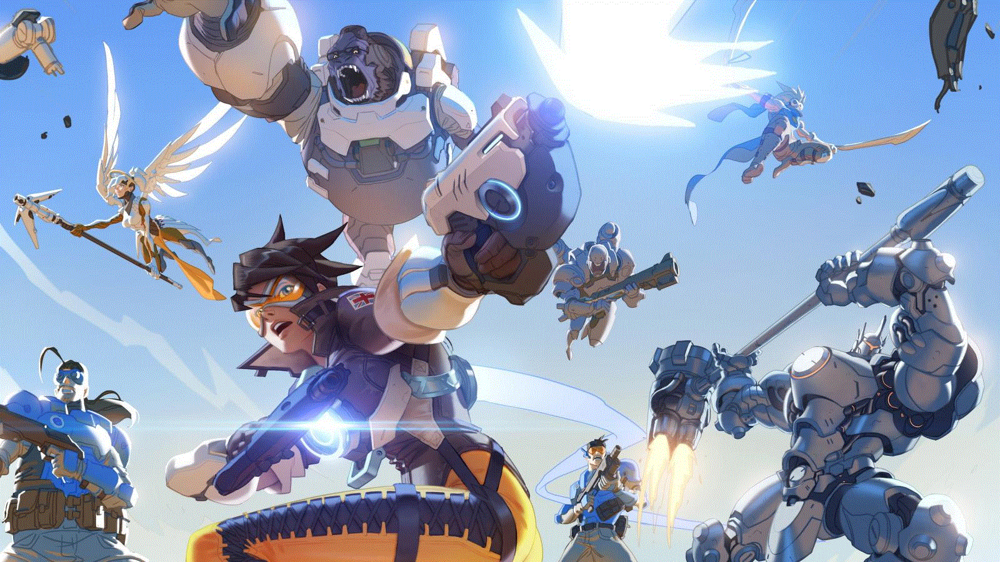
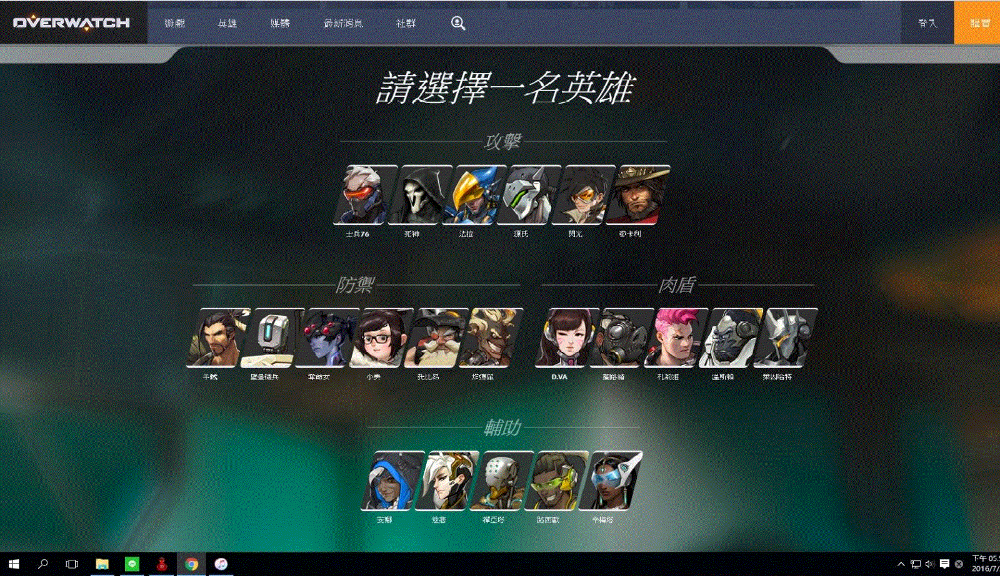
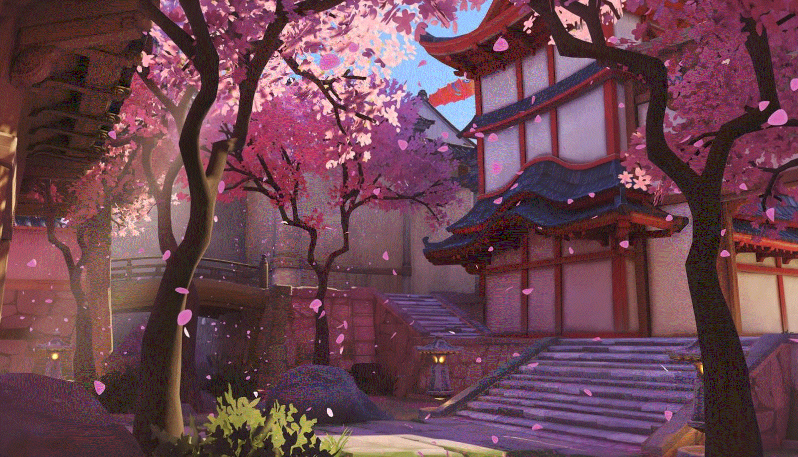
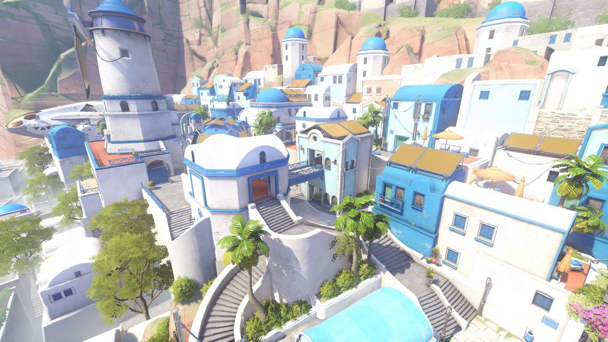
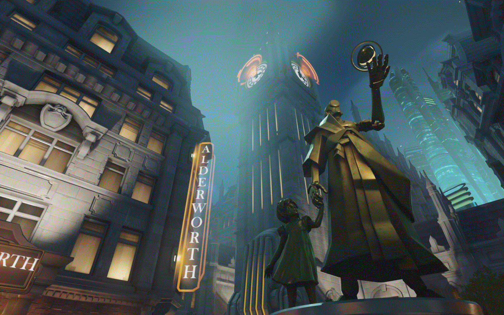

外觀介紹

Kobe11 Manba Day 作為Kobe職業生涯的最後一款NIKEiD球鞋，KOBE 11 Mamba Day iD用了特殊的數字來紀念Kobe的職業生涯，當中有8個比較特別的數字，5代表5次總冠軍，4次all star mvp ，
18次明星賽，單場最高紀錄81分，20年職業生涯。而其顏色上使用了霸氣的黑金，更是突顯了黑曼巴場上的殺手的感覺。
開箱感受

當時從有人手中繼承這雙鞋時，真的只有滿滿的興奮，打開鞋盒看到一張上面記載滿滿紀錄的卡片，以及球鞋本身那個炫目、耀眼的模樣，真的讓人很開心
實戰感受
剛柔並繼的鞋面、充分傳達場地感的 貼地腳感、有效支撐的自由、輕快而流暢，有如足球鞋的低統設計、後跟 Zoom Air 有回饋感，反應面積集中：

抓地力：
抓地力方面真的是沒話說，那個在木頭地板上不停發出的聲響，雖然聽著心痛，但是真的很舒爽，耐磨方面可能是一大短版，室內大約進行兩小時的活動，就能明顯看到鞋底已經有一小塊被磨損，但總歸來說如果打比賽等等高強度是相當夠用的。

回饋：
身為一個中鋒在挑選鞋子上緩震跟回饋就是首要考慮的目標，而這雙kobe11 Manba Day如前面所講後跟的zoom氣墊，真的讓人踩了很有感，跳起落地時，也沒有震腳的感覺，因此回饋跟緩震部分我相當滿意

保護性：
保護性方面，可以明顯看到鞋身是使用較輕的網布組成，所以穿起來相當輕盈，也相當危險，深怕一個不小心就扭到了，而且鞋面容易破，也是這雙球鞋被人常常詬病的一個原因。

心得：
買完這雙球鞋時，錢包空蕩蕩的感覺，讓人相當難受，但是等實體球鞋一到，那個難受的情緒隨之飄散，且在拿下去實戰以後，給人的感覺又相當舒服，真的是一雙好鞋，且相當具有收藏價值，因此如果是kobe迷相當推薦入手，希望哪天東大籃球場可以出現滿滿的這雙鞋。